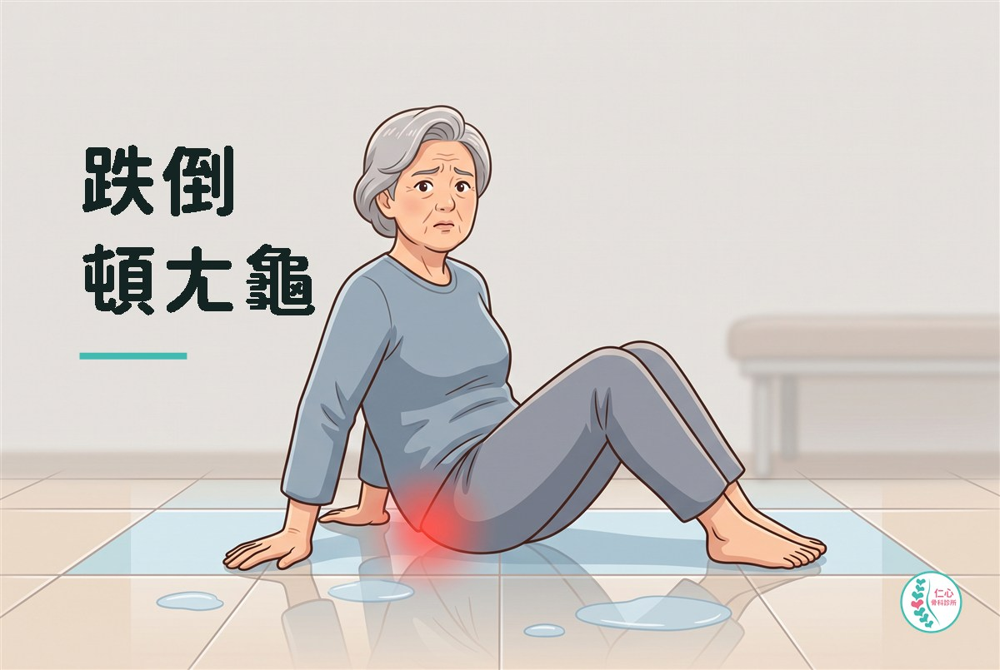
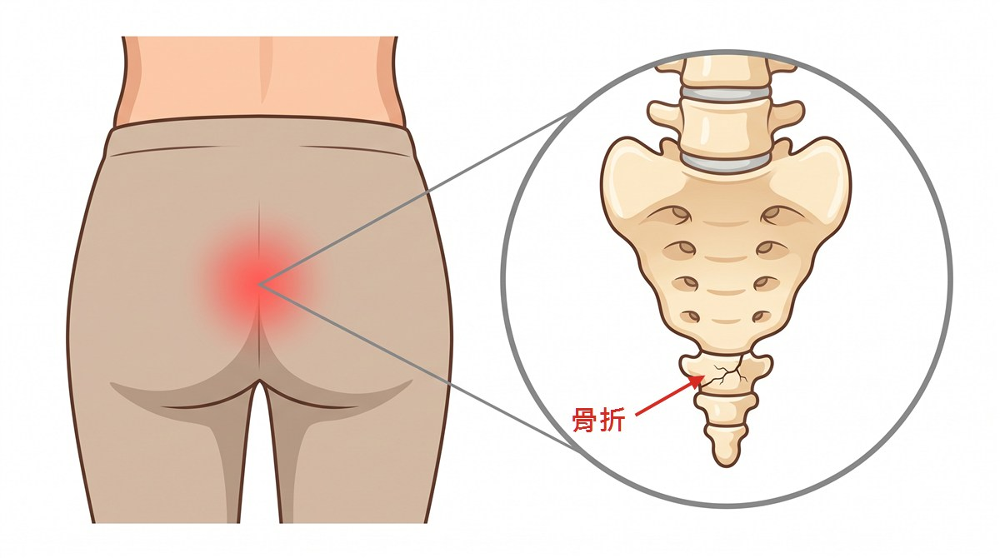

骨科仁心
跌倒頓ㄤ龜

「醫師，我滑倒跌坐地上，這幾天甚麼姿勢都不對，動也痛，不動也痛。」
連日豪雨，除了視線不佳，濕滑的地面也讓跌倒就診的患者明顯增加——一個門診就看了六個，而且受傷的位置都很像。
「怎麼跌的？屁股先著地，還是手先撐地？」
「屁股直接坐下去啊，痛死了。」她皺著眉，小心地換了一下坐姿，「本來想說瘀青而已，擦個藥膏就好，結果越坐越痛，晚上翻身也痛。」
類似的病史，在下雨的日子，一天都要聽好幾次。
屁股著地跌一跤，傷筋斷骨吃不消
跌倒時整個人屁股著地（台語俗稱「頓龜」tǹg-ku），最容易直接衝擊尾椎骨與周邊的軟組織。這個區域的神經分布很密集，疼痛感更是明顯，讓人坐立難安，當起身換姿勢或如廁用力更是煎熬。衝擊會沿著骨盆傳導，造成幾個結構受傷：
- 下背與骨盆周圍的軟組織——肌肉、韌帶被壓擠或拉扯，形成挫傷。這一類最多。
- 尾椎——就是坐下去時最先碰到椅面的那根小骨頭。挫傷、脫位或骨折都可能。
- 薦髂關節——骨盆與脊椎交界的地方，撞擊之後容易發炎。

光從外觀完全看不出差別。都是屁股痛、都可能瘀青，而其中有些人其實已經骨折了。
怎麼治療？
絕大多數的下背與骨盆挫傷，處理重點是消腫止痛、減少刺激；即使是尾椎骨折，也很少需要開刀，讓它自己長回來即可。
除此之外，我通常會交代患者——
- 坐中間有洞的減壓墊（俗稱甜甜圈），讓尾椎懸空，會舒服很多。
- 不要久坐。坐四十分鐘就起來走一走，減少下背壓力。
如果一段時間疼痛仍持續、或者合併神經麻酸等症狀，會再評估需不需要進一步的處理。
建議盡快就醫的情形
- 痛到站不了、走不動，或完全無法承重。
- 腿麻腳無力。
- 大小便困難或失禁。這是要立刻處理的警訊。
- 疼痛一天比一天嚴重，止痛藥壓不住。
- 高齡長輩或已知有骨質疏鬆。
骨質疏鬆的長輩，跌倒時腰椎、髖骨都可能一起受傷，而且初期未必有明顯外傷。所以家裡長輩跌倒之後，就算他說「還好、不太痛」，都建議就醫檢查。
本文為一般衛教資訊，不能取代醫師的診察、診斷或治療。 文中案例已隱去可辨識資訊。每個人的狀況都不同，請與您的主治醫師討論後再決定治療方式。